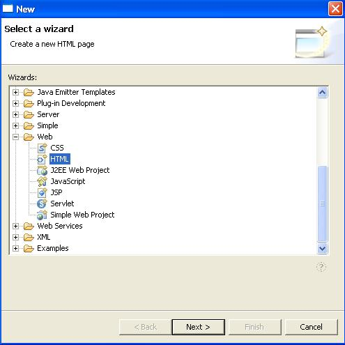
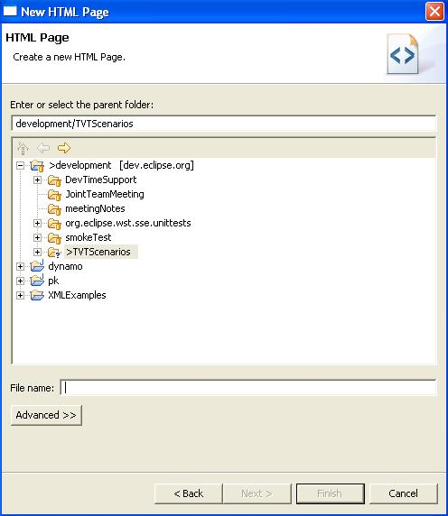
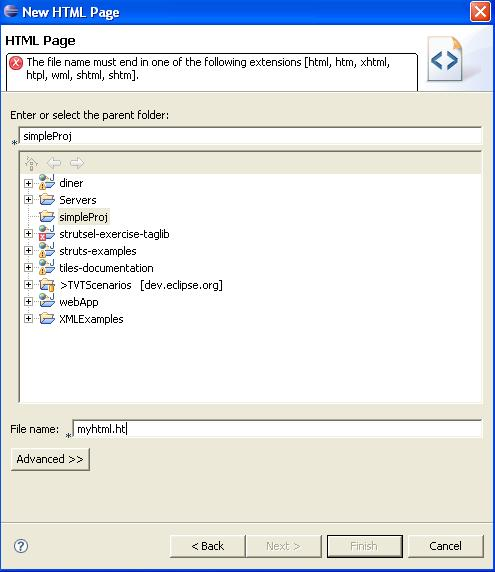
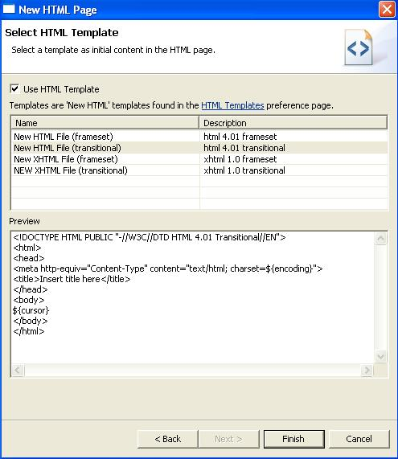
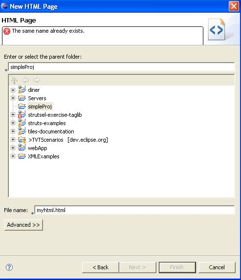

New HTML File Wizard
Steps:
- Go to File ->New ->Other ->Web and select HTML
- Verify description of HTML wizard, Create a new HTML
page.

- Click the Next button
- Verify the following in the New HTML Page dialog:
- New HTML Page
- HTML Page
- Create a new HTML Page
Note: Other translations are covered by IES.

- Type "myhtml.ht"
- Verify the error message that appears.

- Add the last 'ml' for "myhtml.html" then press the Next
button.
- Verify everything on the Select HTML Template dialog
except the Back, Next, Finish, Cancel buttons (those are covered
by IES).

- Press Finish to create the file and leave the wizard.
- Try to create the same exact html file again,
"myhtml.html" in the same location.
- Verify the error message that appears.
